Fonctionnalités #
Modifier la date d’expiration #
Pour prolonger la date d’expiration vous devez :
- utiliser le lien d’administration (celui finissant par
/admin) - passer la souris sous Date d’expiration et cliquer sur l’icône “crayon”
- modifier la date
- cliquer sur l’icône de validation
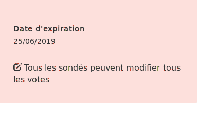
Vous pouvez cliquer sur celle d’annulation si vous ne souhaitez finalement pas modifier la date.
Modifier l’édition des votes #
Pour modifier la façon de modifier les votes vous devez :
- utiliser le lien d’administration (celui finissant par
/admin)
- passer la souris sur la modification des sondages
- cliquer sur l’icône “crayon”
- modifier la façon d’éditer les votes :
- Il n’est plus possible de voter
- Aucun vote ne peut être modifié
- Chaque sondé·e peut modifier son propre vote
- Tous les sondé·es peuvent modifier tous les votes
- cliquer sur l’icône de validation
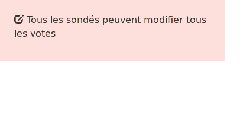
Modifier le mot de passe #
Pour modifier un mot de passe sur un sondage, vous devez (depuis le lien d’administration) :
- cliquer sur l’icône en face de Protégé par un mot de passe dans la section d’administration 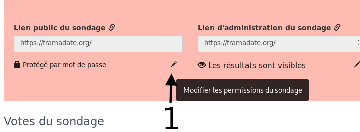
- entrer le nouveau mot de passe dans le champ
- cliquer sur
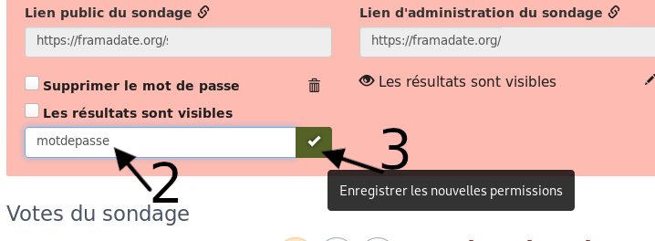
Supprimer un mot de passe #
Pour supprimer le mot de passe d’un sondage, vous devez (depuis le lien d’administration) :
- cliquer sur l’icône en face de Protégé par un mot de passe dans la section d’administration
- cocher la case Supprimer le mot de passe
- cliquer sur
Ajouter une colonne #
Il n’est pas possible de modifier une colonne : vous devez la supprimer en cliquant sur au-dessus de celle-ci et en créer une nouvelle :
- en cliquant sur l’icône +
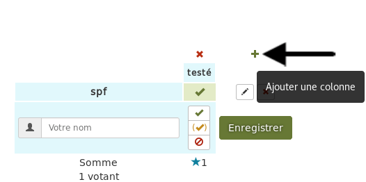
- en donnant un nom à cette colonne
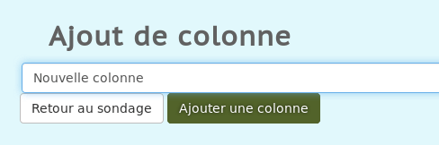
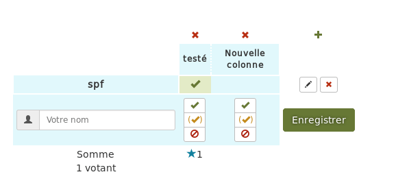
Supprimer une colonne #
Pour supprimer une colonne, vous devez :
- utiliser le lien admin de votre sondage (que vous pouvez retrouver en indiquant l’adresse mail associé sur la page https://framadate.org/find_polls.php)
- cliquer sur l’icône au-dessus de la colonne que vous souhaitez supprimer 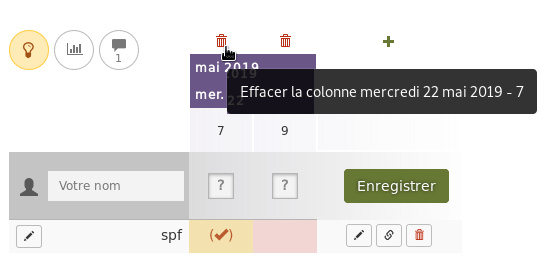
- cliquer sur le bouton OK à l’apparition de la pop-up Confirmer la suppression de cette colonne
Attention : cette opération est irréversible
Ajouter un intervalle de date et reporter les horaires du premier jour sur les autres jours #
Pour cela vous devez choisir l’intervalle de dates avec l’icône ++ :
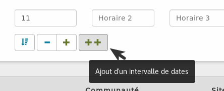
puis positionner le curseur dans le premier horaire du premier jour et cliquer sur :
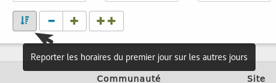
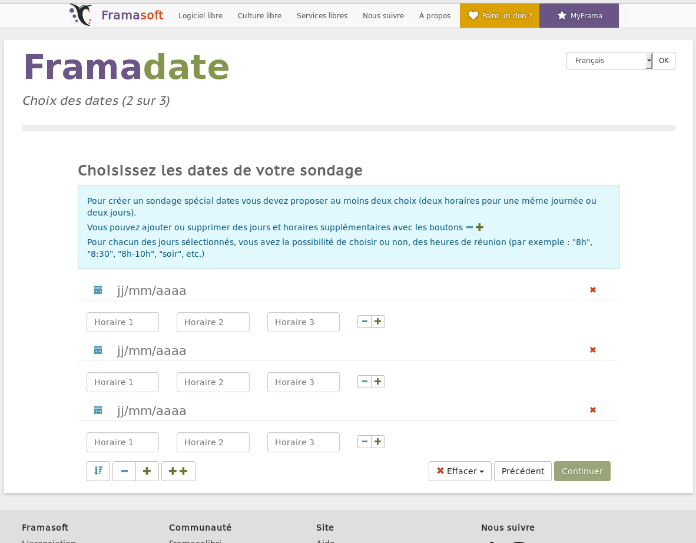
Supprimer un Framadate #
Pour supprimer un Framadate vous devez utiliser le lien d’administration (celui qui finit par /admin - Retrouvez le lien en cliquant ici si vous l’avez perdu) puis :
- cliquer sur l’icône
- cliquer sur supprimer le sondage
- cliquer sur le bouton de confirmation Supprimer le sondage
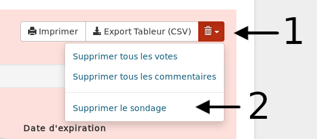